Georgia Institute of Technology · zxiao316@gatech.edu
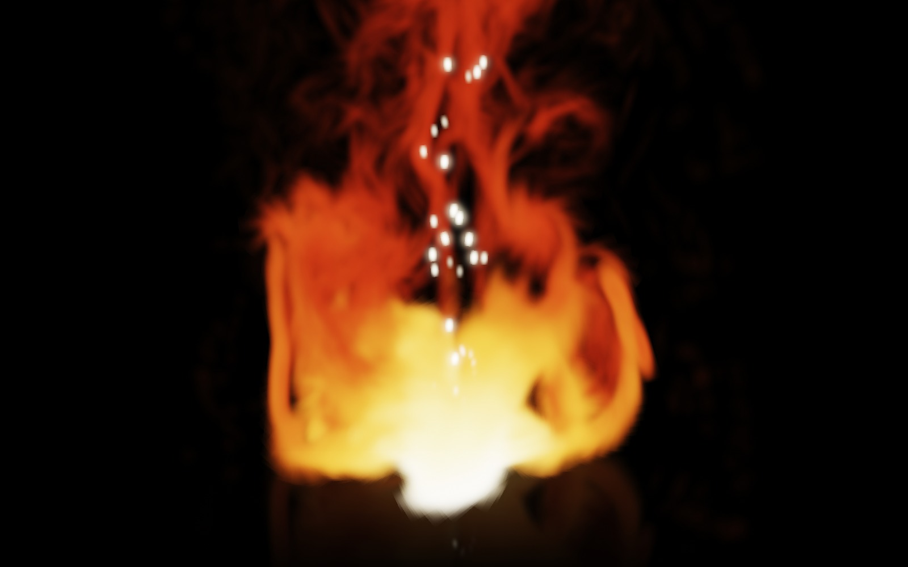
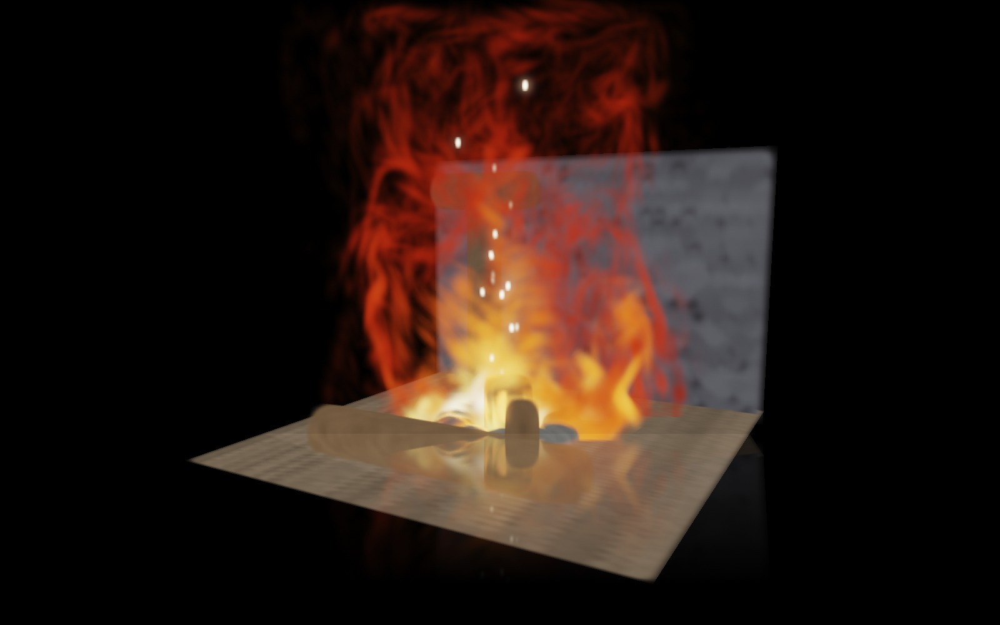
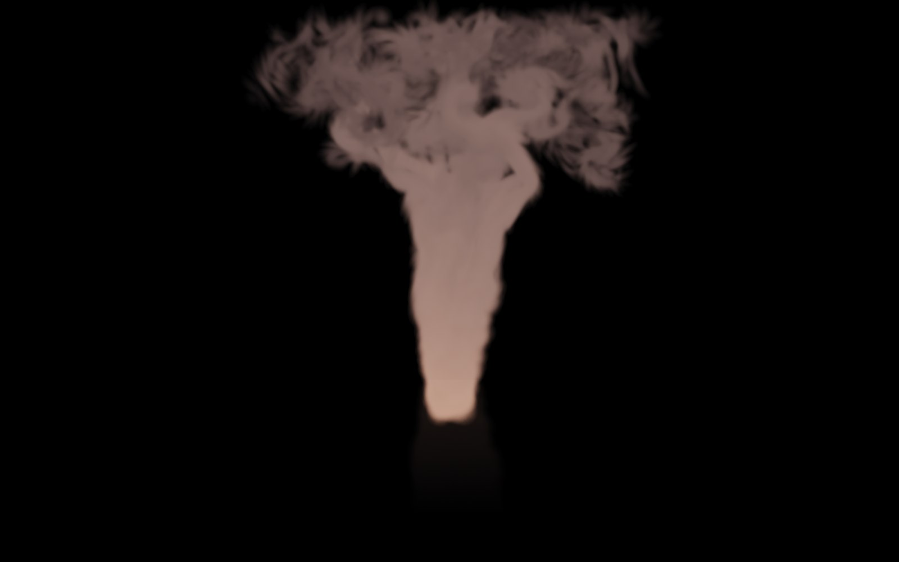
kitchen
from Mip-NeRF 360 at 729,826 Gaussians — where flame and scene share one depth order, so
the loader's arms occlude the fire and the shelf behind is veiled by the plume.
Right: the identical particle state re-shaded as smoke.
Using nothing but a set of Lagrangian vortex particles, Vortex Gaussians generates fire and smoke by forward physical simulation in real time and renders them as native Gaussian-splatting content: the fire's Gaussians share one global depth order and one emission–absorption blend state with a Gaussian-splat environment, so a foreground scene object correctly occludes the flame and the flame occludes the scene behind it.
Fire and smoke remain absent from Gaussian-splatting (GS) scenes: physics-integrated GS handles solids and liquids, GS fire methods only reconstruct observed flames, and the one system that simulates new fire composites ray-marched volumes over an opaque backdrop at seconds per frame. We present the first system that generates fire and smoke by forward physical simulation in real time and renders them as native Gaussian-splatting content. Our key insight is that Lagrangian vortex particles and 3D Gaussians are the same class of point primitive: one particle set serves simultaneously as simulation state and render primitive—position to Gaussian mean, temperature to emissive blackbody color, density to opacity, velocity gradient to anisotropic covariance—with no voxelization, meshing, or simulation-to-renderer conversion anywhere. A grid-free Gaussian vortex-particle solver drives them, in which each splat is a Lamb–Oseen vortex element and velocity, its analytic gradient and temperature are closed-form evaluations of the rendered mixture under a Barnes–Hut treecode — no Poisson solve, no grid — together with a bidirectional inter-slice vorticity-coupling operator that restores the out-of-plane transport stacking drops. One depth-sorted emission–absorption rasterizer composites flame, smoke, embers, and reconstructed 3DGS scenes with per-primitive mutual occlusion. Our single-file WebGL2 prototype runs in real time on a workstation-class desktop — 17.1 ms per frame (58 FPS) at the shipping preset — with a deterministic-replay harness that makes every reported number bit-reproducible.
Seven single-take sequences, unedited: a flame in close-up, the same solver burning inside a loaded scene, one particle state re-shaded from fire to smoke, then three side-by-side solver comparisons — Grid Mode (VIC) against Grid-Free (Gaussian VPM) from the same seed at the same timestep through the identical renderer, so every visible difference is the solver — and a closing take of fire spreading across the splats of a loaded scene. Frames are rendered deterministically at Δt = 1/60 s and encoded at 60 fps, so playback speed equals simulation speed.
Combustion state — heat, fuel, char, glow — lives directly on the reconstruction's own splats. The flame ignites nearby geometry, fire spreads splat-to-splat on a heat threshold, charring is written into the splats' albedo, and burning geometry re-seeds the solver with new plumes: a bidirectional simulation↔scene loop.
kitchen from Mip-NeRF 360, the pre-trained 3DGS release, 729,826 Gaussians
at degree-3 spherical harmonics. Nothing is ignited by hand. The flame stands on the
table; the placemat is within the heating radius and starts burning within six seconds, the
model loader is not and sits in the fire doing nothing for twenty-four seconds — then
catches by itself at simulated t = 24.40 s, 29 splats crossing the
ignition threshold on accumulated heat, with no ignite call anywhere. One
unbroken 43-second take follows the char front to 64.6% charred near
t = 250 s, under a slow 27° camera arc.
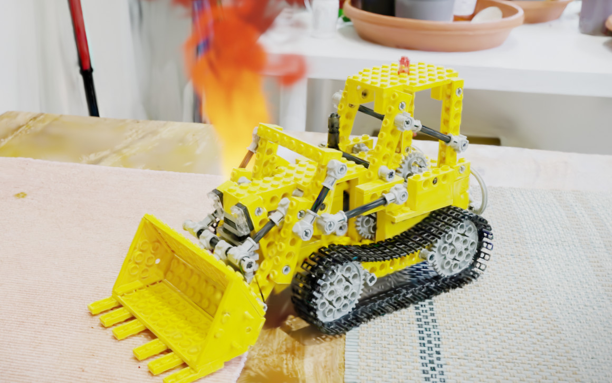
t = 0 — nothing lit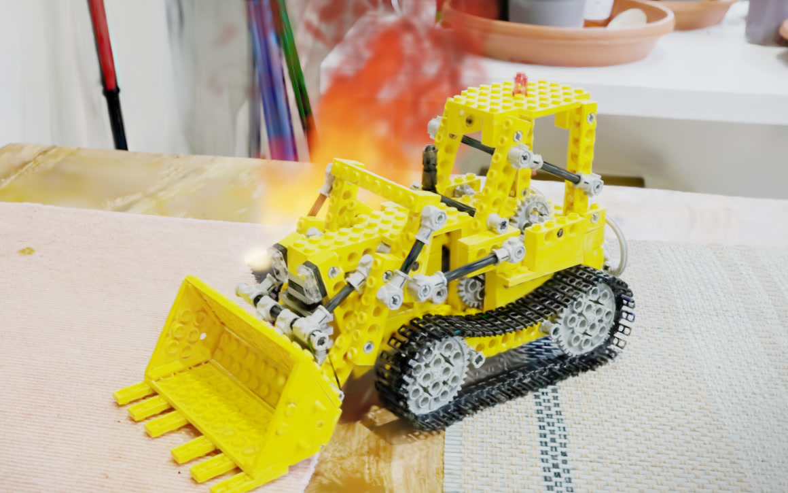
t = 24.4 s — it catches, 29 splats of 75,443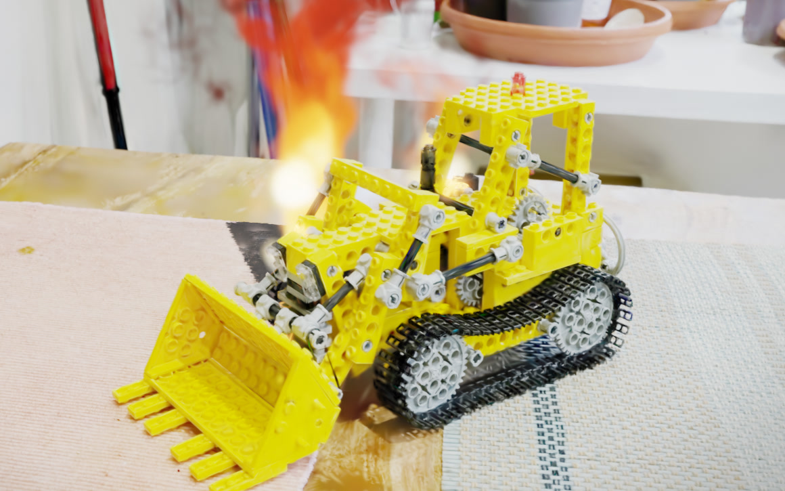
t = 100 s — 12.5% charred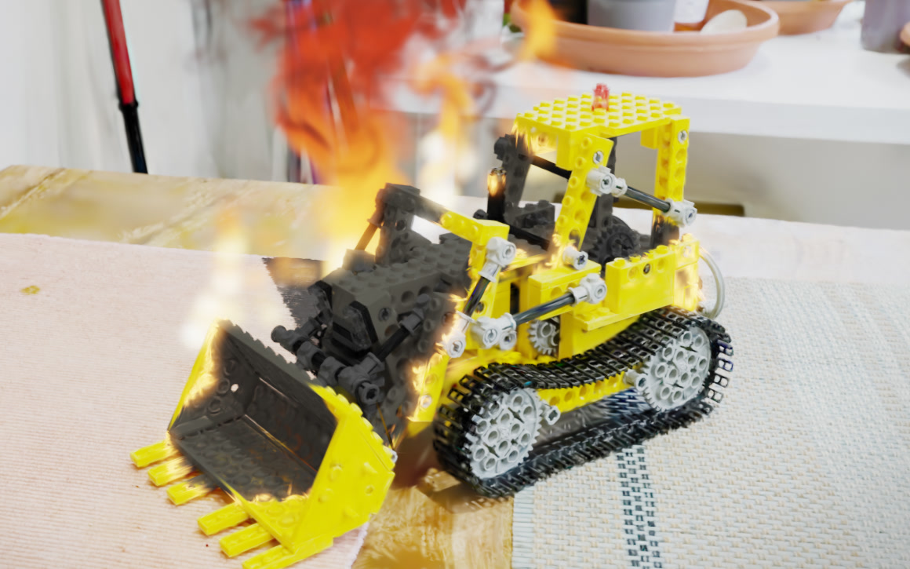
t = 250 s — 65% charredThe same solver, compiled as dependency-free C++17 and run headless, burning a drone
reconstruction of a village inside NVIDIA Omniverse (Isaac Sim 6.0).
The reconstruction, the flame, the smoke and the char are one primitive type —
OpenUSD 26.03's ParticleField3DGaussianSplat — ray-traced in a single
pass. The capture holds 8,362,588 Gaussians; the shot renders a full-density crop of
1,892,830 static surroundings plus the 736,360 that make up the farmhouse, which
is split out because it is the part that changes. 220,706 splats burn at the peak and
400,000 are charred by the last frame — 54% of the building.
The fire is a second stream of Gaussians merged into the scene's own depth order, not a layer drawn over it. Loaded reconstructions are interleaved with the flame by an asymmetric two-stream sort — the small dynamic set exactly, the scene counting-sorted into 1536 view-depth buckets in O(m+K) — at a measured overhead (22.9 vs 21.2 ms median render at 45.8k scene splats, +8%; 291.0 vs 239.3 ms at 729,826, +22% — the premium grows with scene size).
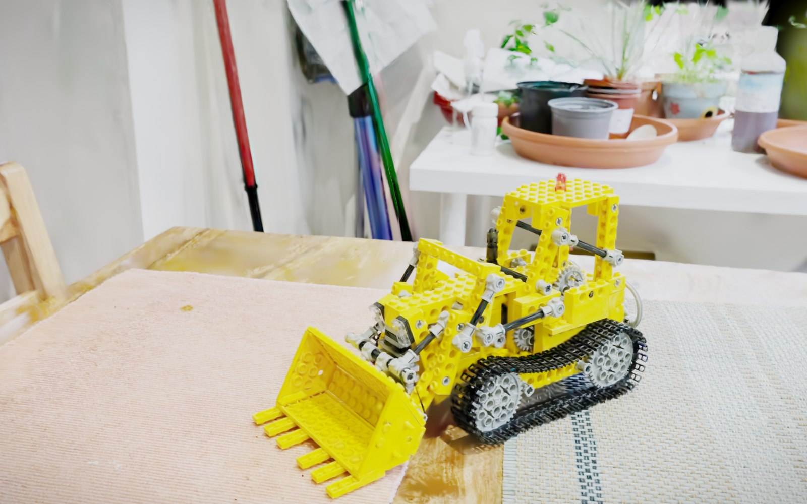
the capture, as released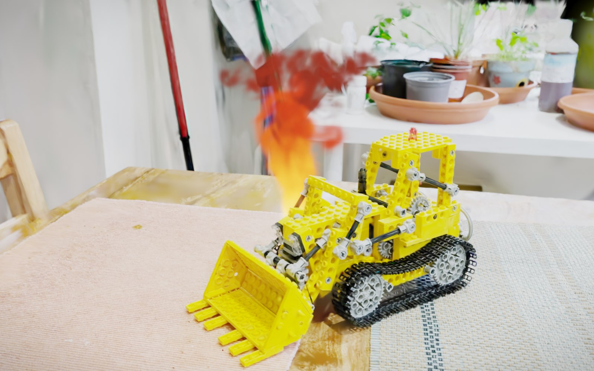
+ our fire, same camera and frameBelow, a fire-ring stone stands between the camera and the white-hot core. Drag the slider. On the left the stone's silhouette bites into the core through a soft, correctly blended boundary — each primitive occludes by its own depth. On the right only the interleave between the two streams is removed: the scene still sorts correctly among itself, but the flame composites in front of every primitive and the stone vanishes from the core.
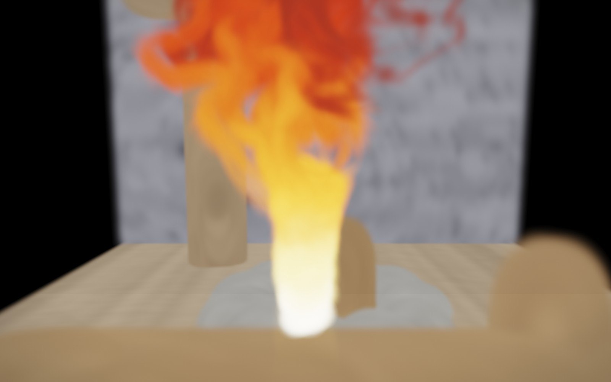
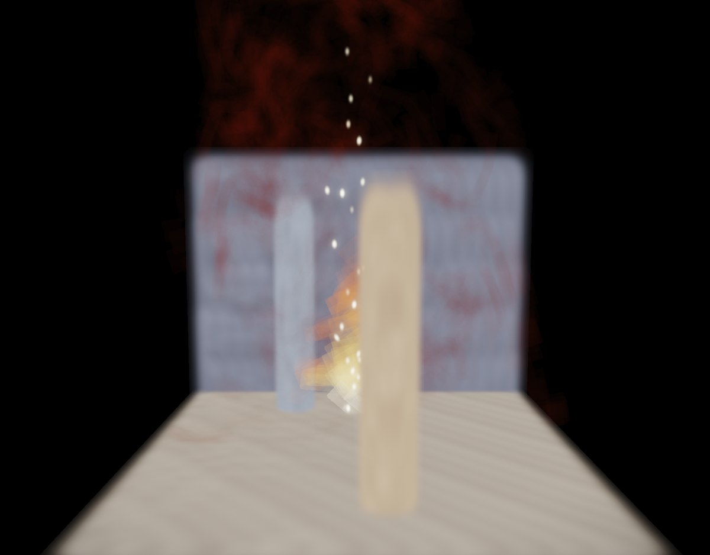
The entire system is a single dependency-free HTML file (CPU JavaScript
simulation + WebGL2 rendering). Drag to orbit, Shift-drag to move the fire source, add
wind, sweep the coupling, toggle fire↔smoke, hot-swap solvers per slice — or load
your own Inria-format .ply reconstruction and light a fire inside it.
A directable coarse field — the top levels of the solver's own Barnes–Hut tree — drives N per-slice grid-free Gaussian vortex-particle simulations. Each slice exposes its particles through a minimal contract {x, T, d, u}; the renderer lifts every particle directly into an emissive anisotropic Gaussian and rasterizes all of them — fire, smoke, embers, and the background 3DGS scene — in one depth-sorted emission–absorption pass. There is no voxelization or resampling anywhere.
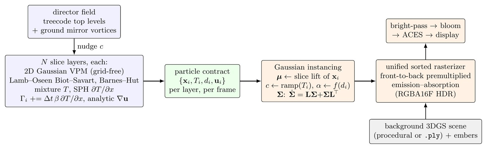
"GS-native" means the phenomenon is rendered as Gaussian primitives depth-interleaved with the scene — not composited over it.
| Method | gaseous emissive | forward physics | real-time | GS-native | scene composed |
|---|---|---|---|---|---|
| Horvath & Geiger 2009 (ILM layered fire) | ✓ | ✓ | — | — | matte |
| PhysGaussian (CVPR 2024) | — | ✓ | — | ✓ | ✓ |
| Gaussian Splashing (CVPR 2025) | — | ✓ | — | ✓ | ✓ |
| Gaussian Fluids (SIGGRAPH 2025) | — | ✓ | — | — | — |
| Gaussians on Fire (2025, reconstruction) | ✓ | — | (render) | ✓ | — |
| FieryGS (ICLR 2026) | ✓ | ✓ | — | — | backdrop |
| Vortex Gaussians (ours) | ✓ | ✓ | ✓ | ✓ | ✓ |
For calibration: FieryGS reports 2.37 s/frame (RTX 4090D); Gaussian Fluids reports 38–228 s per time step (RTX 4090); production layered fire required ~20 s per slice per frame on a GPU farm. Our prototype runs the full loop at 58 FPS (17.1 ms/frame, five-seed median) — in a browser, with the simulation single-threaded in CPU JavaScript.
@misc{xiao2026vortexgaussians,
title = {Vortex Gaussians: Real-Time Simulation-Driven Fire and Smoke
as Native Gaussian-Splatting Content},
author = {Zijun Xiao},
year = {2026},
note = {Preprint, under review}
}